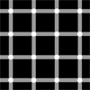

Unit 1: Introduction

This session is an introduction to the subject of psychology: the scientific study of how we think, feel and act. The lecture features some fascinating examples and fun demonstrations on topics like optical illusions, limits of visual attention, the power of suggestion in memories, and the relationship between how we feel and how we act.
Keywords: perception, optical illusion, visual memory, visual attention, listening, automaticity, prediction, thinking, feeling, acting.
What is in this module
| Part | Original form | Remediated form |
|---|---|---|
| Lesson reading | 10-page PDF study outline (Kosslyn & Rosenberg, Chapter 1); references textbook-only tables | Semantic HTML lesson with a self-contained summary table and descriptive lists |
| Lecture slides | 54-page PDF of image-heavy PowerPoint slides; export junk alt text | HTML slide deck — one section per slide, real text, figure descriptions, speaker notes, chart data as tables |
| Lecture video (~50 min) | Flash-era player in a JS popup; no captions, no transcript, ambiguously named download links | Video page — standard player, captions from the publisher transcript, chapter navigation, text description of the visuals, full transcript |
| Practice quiz | PDF exam files (12–21 pages), not fillable or navigable as a quiz | Accessible HTML quiz — labeled controls, live-region feedback, no time limit |
Suggested order
- Read the lesson (the chapter outline).
- Skim the lecture slides — each slide has a speaker note.
- Watch the lecture video with captions, or read along with the transcript.
- Take the practice quiz.
About this remediation
This module is a real, openly licensed course unit used as the subject of the
accessibility case study. The original is preserved unchanged in the
repository’s docs/before/ folder (labeled “inaccessible
original”). What was changed, and why, is documented in the
case study landing page, the
attribution page, and the
issue log and conformance report.